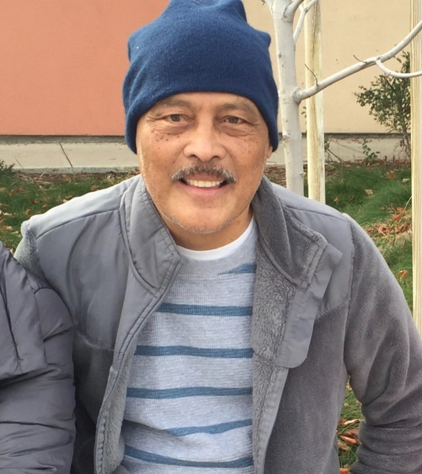

Nursing Science · Informatics · Health Equity
The TenJ Lab empowers historically and contemporarily marginalized groups, such as Filipino Americans, using nursing science and informatics to build a future of equitable access to diabetes prevention and management.

The lab is named in honor of Jessie Tolentino, father of the lab’s founder, Dr. Dante Anthony Tolentino. In the Philippines, Jessie owned a retail shop called “Ten J.”
After immigrating to the United States, Jessie developed type 2 diabetes and passed away from related complications in 2017. His life and legacy inspired the founding of this lab and its commitment to diabetes equity.
To empower historically and contemporarily marginalized groups using nursing science and informatics, creating a future where they have equitable access to diabetes prevention and management resources.
We center underrepresented voices in diabetes research through culturally sensitive, evidence-based care.
We design care approaches that account for spirituality, social support, family connection, and colonial mentality, which are often overlooked in mainstream research.
We apply digital health and informatics methods to understand workflows, share data responsibly, and build tools that reach communities where they are.
Filipino Americans are one of the largest Asian American subgroups in the U.S., yet they remain understudied. We work to close that gap.